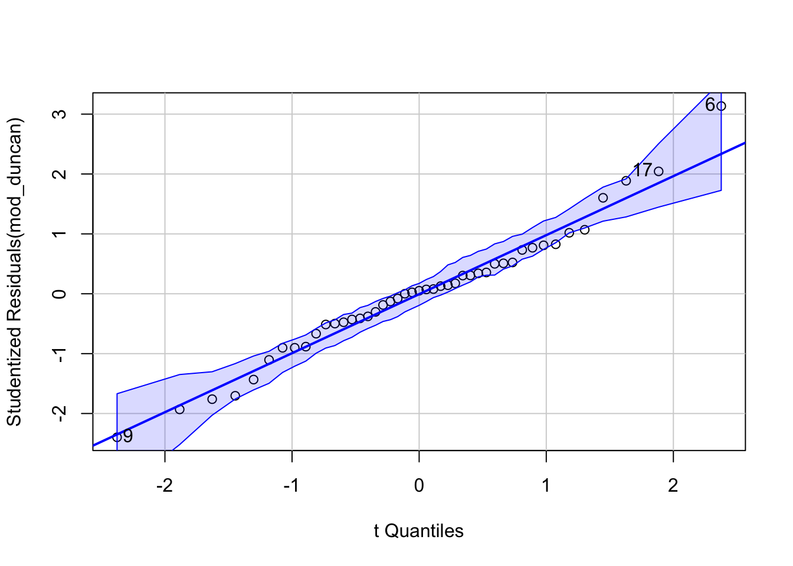

E (equal variance, 등분산성): X의 각 값에 해당하는 Y값들의 표준편차들은 모두 동일함.
Variance fucntion: \(Var(Y | X = x_i) = \sigma^2\)
Source: Beyond Multiple Linear Regression, by Paul Roback, Julie Legler.
가정에 위배되는 연구/자료들
공부한 시간에 따른 합격 여부
Y가 성공/실패 명목변수로서 0, 1로 코딩된다고 하면, Y는 정규분포를 이루지 않음.
이런 경우 generalized linear model(GLM)의 일부로서 logistic regression 모형으로 fit을 하는 것이 더 적절함.
부유한 가정은 더 적은 아이들을 가지는 경향이 있는가?
가족의 크기는 정규분포를 이루기보단 한쪽으로 치우친(skewed) 분포를 이룸.
가족의 크기는 0, 1, 2,… 등의 정수값을 가져, 연속형 변수로 보기 어려워 정규분포의 가정을 만족하기 어려움.
이런 경우 가족의 크기는 Poisson 분포에 더 가깝다고 보고, Poisson regression 모형이나 그 변형들로 fit을 하는 것이 더 적절함.
대학 안에서 임의로 선정한 남녀 학생들의 운동시간과 몸무게의 관계
운동을 전혀 하지 않는 학생들의 몸무게의 변량이 규칙적으로 한 학생들에 비해 더 넓게 분포할 가능성이 큼: 이는 equal variance 가정을 위배함.
만약, 대학 내에서 특정 장소들을 포함해 학생들을 섭외했다면, 예를 들어, 피트니스 센터에서 섭외된 학생들의 데이터는 서로 연관성이 높을 수 있음: 이는 independence 가정에 위배됨.
특정 질병을 가진 환자들에 대한 특정 수술에 대한 효과를 연구한다면,
동일한 의사에게 수술을 받은 환자들의 데이터는 서로 연관성이 높을 수 있음: 이는 independence 가정에 위배됨.
동일한 병원에서 수술을 받은 환자들의 데이터는 서로 연관성이 높을 수 있음: 이는 independence 가정에 위배됨.
대처방안/대안들
Linearity의 가정에 위배되는 경우: 변수들을 변환(transform)하거나 고차 다항식 혹은 확장된 모형(eg. spline)을 사용
Normality의 가정에 위배되는 경우: 변수들을 변환(transform)하거나 generalized linear model(GLM)을 사용
Equal variance의 가정에 위배되는 경우: 변수들을 변환(transform)하거나 weighted least squares regression을 사용
Independence의 가정에 위배되는 경우: multi-level (mixed-effects) 모형을 사용
OLS에서 모집단에 대한 가정들에 대한 진단
Source: An R Companion to Applied Regression (3e), by John Fox, Sanford Weisberg.
연구자는 기본적으로 변수 간의 true relationship이 존재할 것이라고 믿으며, 모집단에서 그 관계가 완전한 형태로 존재한다고 가정하고, 그 관계를 표본으로부터 최대한 추론하고자 함.
OLS 방식으로 모집단에 대한 추론을 하려면, OLS가 요구하는 모집단에 대한 가정들이 위배되지 않아야 함.
연구자는 관찰된 표본이 “LINE 가정들을 만족하는 모집단”으로부터 표집된 표본이라고 볼만한 충분한 확신이 있어야 함.
이를 위해서 표본들로부터 대략적인 추정을 할 수 밖에 없음.
예제: Prestige 데이터셋
education: Average education of occupational incumbents, years, in 1971.
income: Average income of incumbents, dollars, in 1971.
women: Percentage of incumbents who are women.
prestige: Pineo-Porter prestige score for occupation, from a social survey conducted in the mid-1960s.
census: Canadian Census occupational code.
type: Type of occupation. A factor with levels (note: out of order): bc, Blue Collar; prof, Professional, Managerial, and Technical; wc, White Collar.
mod_duncan <-lm (prestige ~ income + education, data=Duncan)S(mod_duncan)
Call: lm(formula = prestige ~ income + education, data = Duncan)
Coefficients:
Estimate Std. Error t value Pr(>|t|)
(Intercept) -6.06466 4.27194 -1.420 0.163
income 0.59873 0.11967 5.003 1.05e-05 ***
education 0.54583 0.09825 5.555 1.73e-06 ***
---
Signif. codes: 0 '***' 0.001 '**' 0.01 '*' 0.05 '.' 0.1 ' ' 1
Residual standard deviation: 13.37 on 42 degrees of freedom
Multiple R-squared: 0.8282
F-statistic: 101.2 on 2 and 42 DF, p-value: < 2.2e-16
AIC BIC
365.96 373.19
Outliers
qqPlot(): 95% pointwise confidence envelope for the Studentized residuals, using a parametric version of the bootstrap. outlierTest(): Bonferroni-adjusted p-values for the Studentized residuals.
qqPlot(mod_duncan, id=list(n=3))

[1] 6 9 17
outlierTest(mod_duncan)
No Studentized residuals with Bonferroni p < 0.05
Largest |rstudent|:
rstudent unadjusted p-value Bonferroni p
6 3.134519 0.0031772 0.14297
Influential points에 대한 지표들
Cook’s distance: i번째 관측치가 제거되었을 때 회귀계수의 변화량에 대한 요약치
Studentized residuals: 표준화한 잔차
Bonferroni-adjusted p-values: 잔차의 분포에 대한 p-value를 Bonferroni 방식으로 보정한 값
hat-values: 예측변수들의 공간에서 중심으로부터 멀리 떨어진 정도
가장 큰 값들에 해당하는 관측치들을 제거해보고 회귀분석을 한 후 결과를 비교
원칙적으로 한번에 한 관측치만 제거하고, 차례로 진단을 해야 함; 전체적인 fit이 변하므로
influenceIndexPlot(mod_duncan)
# 6번째 관측치 제거mod_duncan2 <-update(mod_duncan, subset =-6)compareCoefs(mod_duncan, mod_duncan2, pvals =TRUE)
Calls:
1: lm(formula = prestige ~ income + education, data = Duncan)
2: lm(formula = prestige ~ income + education, data = Duncan, subset = -6)
Model 1 Model 2
(Intercept) -6.06 -6.63
SE 4.27 3.89
Pr(>|z|) 0.156 0.088
income 0.599 0.732
SE 0.120 0.117
Pr(>|z|) 5.6e-07 3.7e-10
education 0.5458 0.4330
SE 0.0983 0.0963
Pr(>|z|) 2.8e-08 6.9e-06
Calls:
1: lm(formula = prestige ~ income + education, data = Duncan)
2: lm(formula = prestige ~ income + education, data = Duncan, subset = -c(6,
16))
Model 1 Model 2
(Intercept) -6.06 -6.41
SE 4.27 3.65
income 0.599 0.867
SE 0.120 0.122
education 0.5458 0.3322
SE 0.0983 0.0987